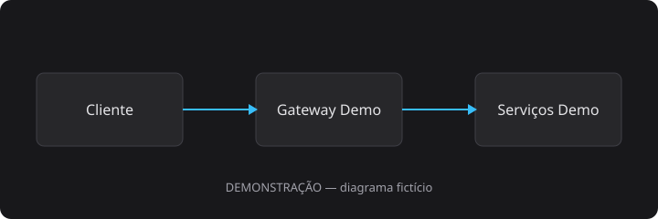

DEMONSTRAÇÃO. Recursos e campos fictícios, sem relação com o Sol-Maker real.
A API demonstrativa de clientes permite consultar, criar e atualizar cadastros fictícios. Todas as chamadas exigem autenticação.
| Campo | Tipo | Descrição |
|---|---|---|
id | string | Identificador fictício |
name | string | Nome do cliente demo |
email | string | E-mail de exemplo |
active | boolean | Indica se o cadastro está ativo |

../images/fluxo-demo.svg.